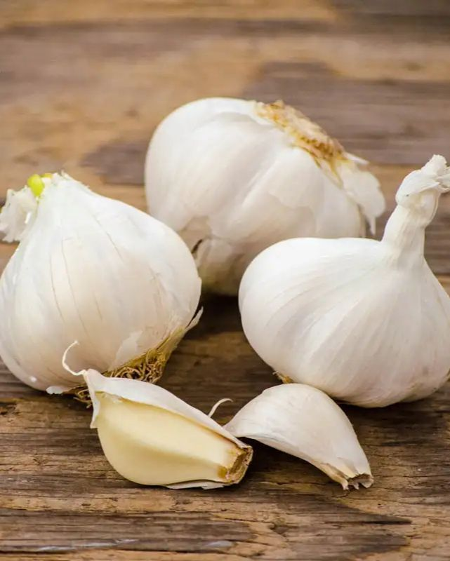
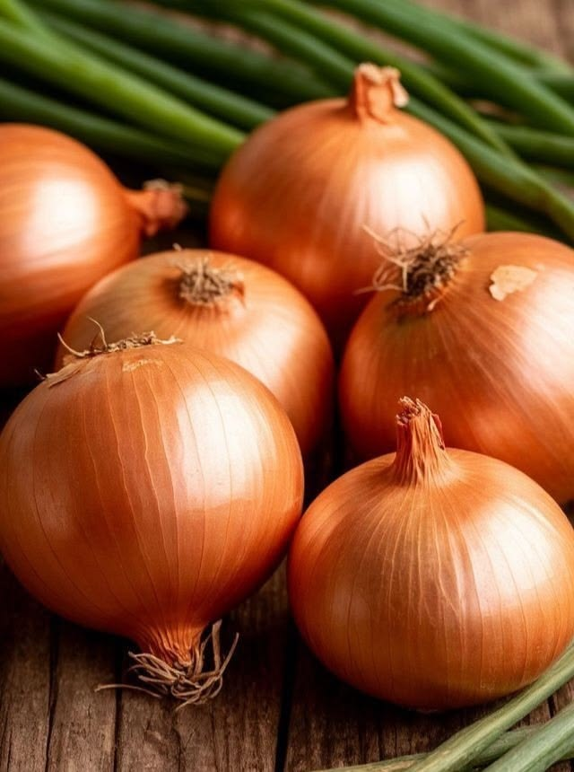
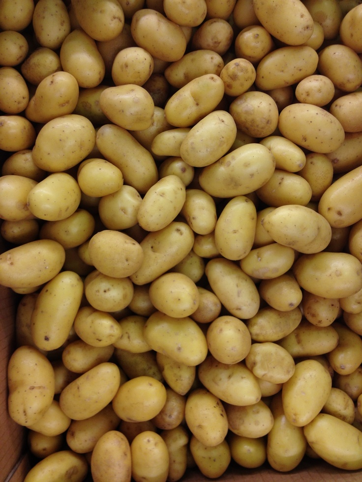
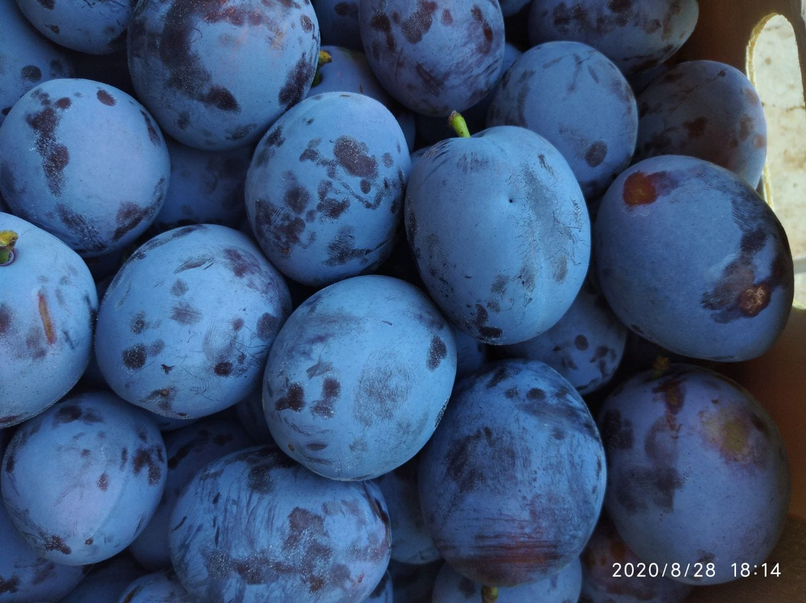
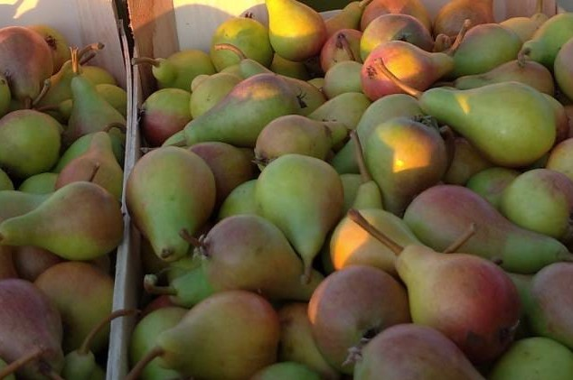
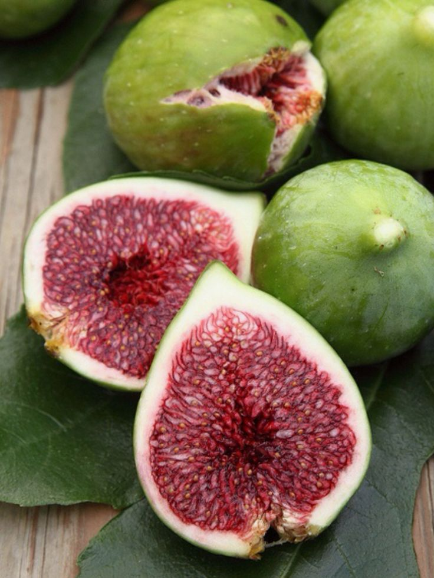
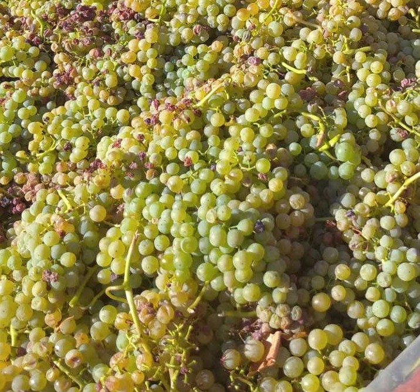
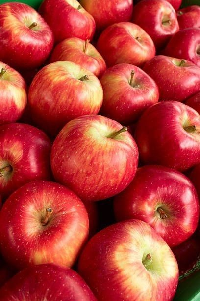
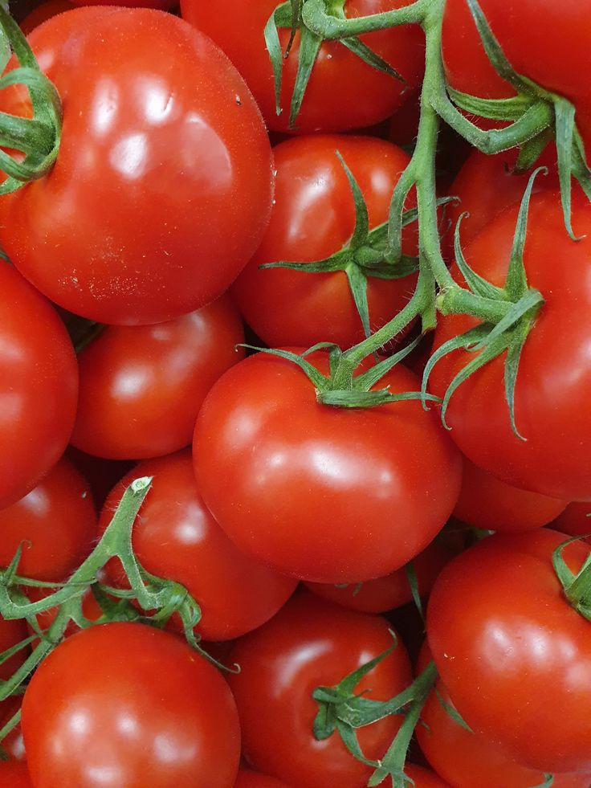
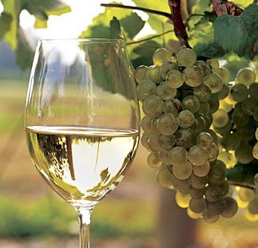

Češnjak
Domaći češnjak prepoznatljiv je po intenzivnom okusu i kvaliteti te je sastavni dio mnogih jela.
U našoj ponudi nalaze se domaće voće, povrće i vino s našeg gospodarstva.

Domaći češnjak prepoznatljiv je po intenzivnom okusu i kvaliteti te je sastavni dio mnogih jela.

Na našem gospodarstvu uzgajamo domaći luk koji se odlikuje jačinom i punim okusom.

Krumpir uzgajamo s posebnom pažnjom kako bismo osigurali kvalitetan i domaći proizvod.

Šljive s našeg gospodarstva odlikuju se sočnošću, prirodnom slatkoćom i bogatim okusom.

Kruške uzgajamo u našem voćnjaku, a poznate su po svježini i ugodnoj aromi.

Smokve su jedan od prepoznatljivih plodova našeg kraja i dio su domaće ponude OPG-a.

Grožđe s naših nasada koristi se i za konzumaciju i za proizvodnju domaćeg vina.

Jabuke uzgajamo s ciljem očuvanja prirodnog okusa, svježine i kvalitete plodova.

Rajčice su dio naše sezonske ponude i ističu se domaćim okusom i svježinom.
Naše domaće crno vino nastaje iz pažljivo uzgojenog grožđa i dio je obiteljske tradicije.

Bijelo vino s našeg gospodarstva odlikuje se svježinom, skladnim okusom i domaćom kvalitetom.